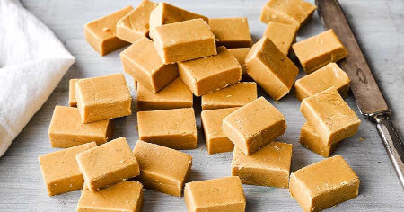

Home
Fudge

Instructions
- Butter 150g
- Evaporated Milk 410g
- Caster Sugar 500g
- Vanilla Essence 2 tsps
Method
- Pour evaporated milk into medium pot
- Dump butter in
- Dump caster sugar in
- Put ring on high heat and bring to boil
- Stir constantly for 20 mins until it gets thick, take it off the heat and whisk for 10 minutes till texture goes sticky
- Add vanilla essence when thick
- Whisk another 5 minutes, grease proof paper and flatten out, leave for 2 and a half hours to set and store in fridge